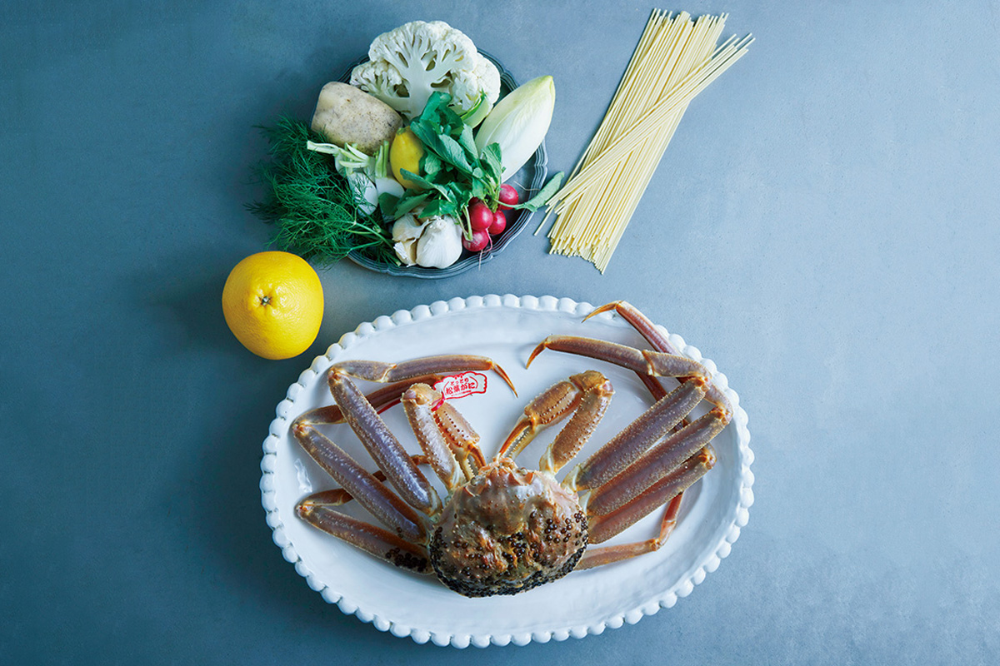
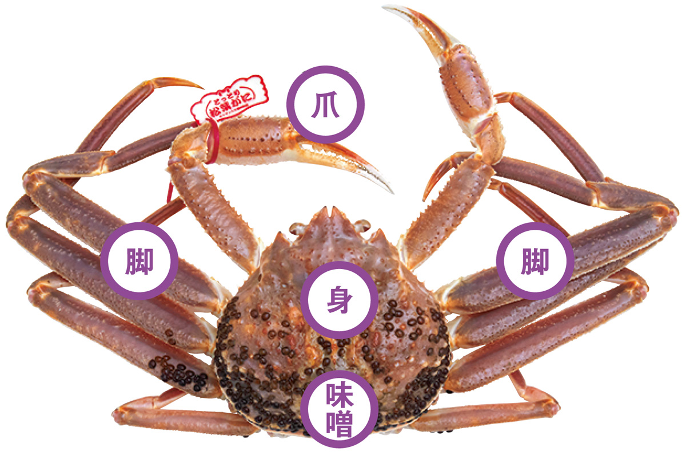
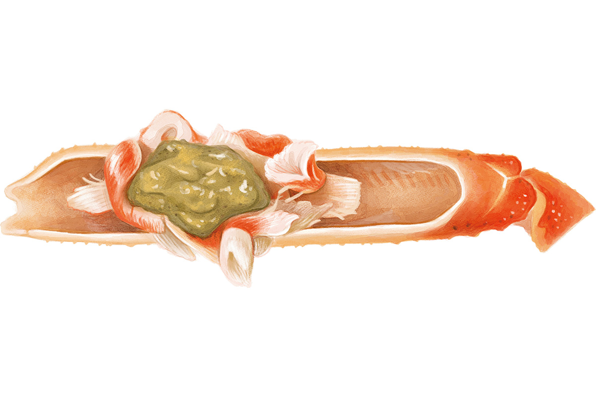
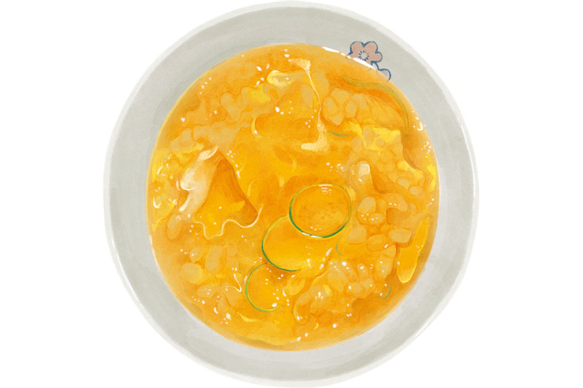
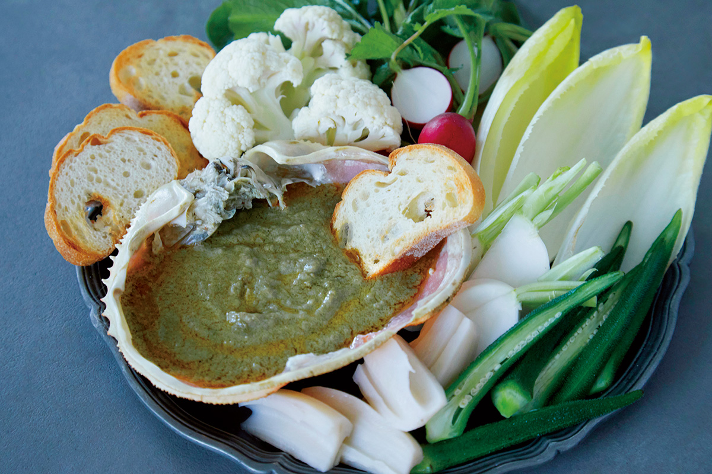
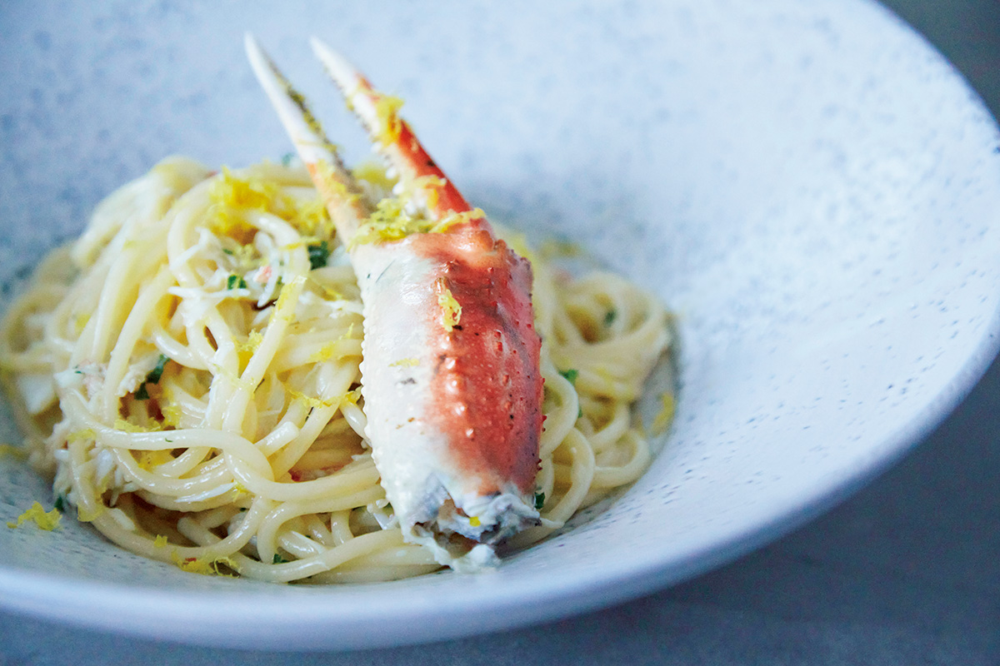
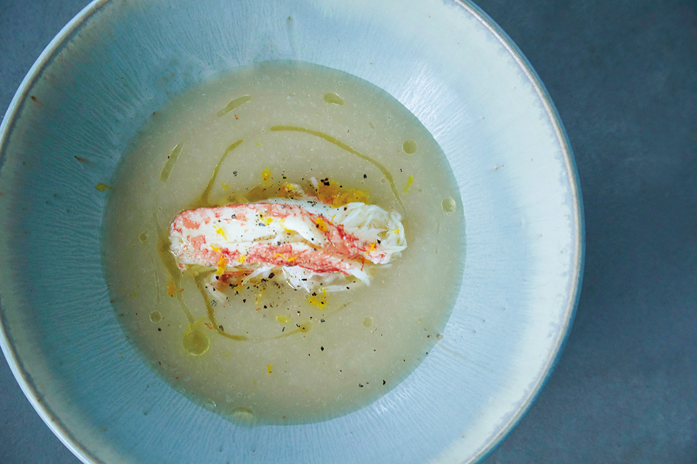
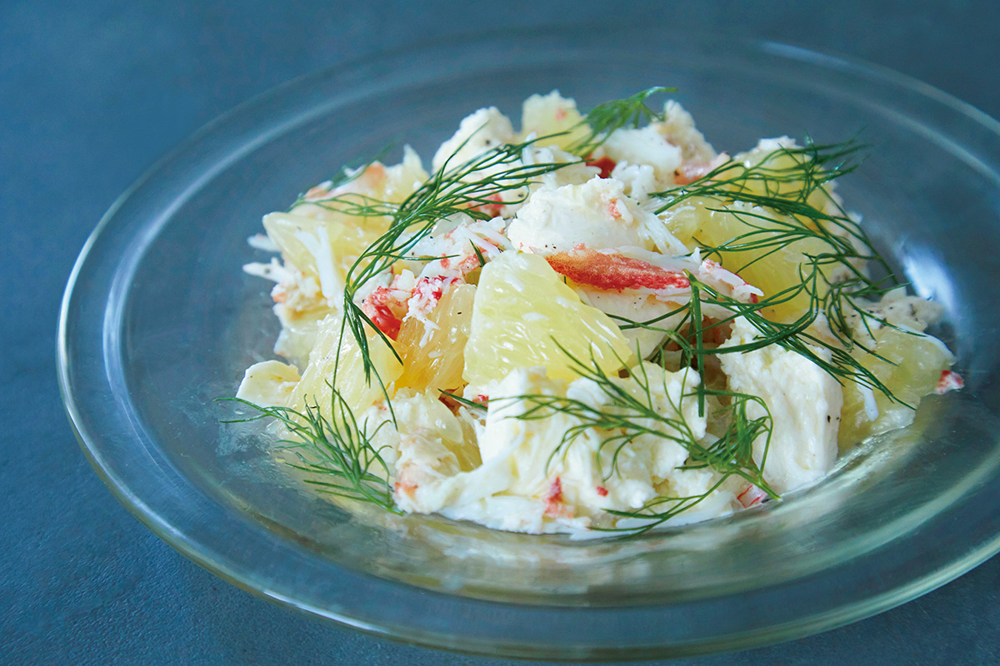

Префектура Тоттори · город Тоттори · еда
Краб мацуба: зимний король Тоттори в ресторане «Каниёси» и на домашней кухне

Зимой префектура Тоттори живёт крабом. Краб мацуба здесь называют королём зимнего стола, и ради него едут в ресторан в городе Тоттори, где из одного краба собирают целый ужин от первой закуски до последней ложки каши.
Сезон
Что такое краб мацуба
Краб мацуба это самец снежного краба, которого вылавливают у берегов Санъин, на западе Японии вдоль Японского моря. Префектура Тоттори, самая малонаселённая в стране, считает его своим главным зимним продуктом. С открытием сезона начинается и продажа с доставкой прямо из мест улова.
Тотторийского краба ловят донным тралом в открытом море, с глубины от 150 до 600 метров. Сеть тянут по течению, поэтому краб почти не бьётся и не испытывает стресса. Мясо у него плотное, упругое, вкус чистый, но глубокий, с мягкой сладостью. Каждый краб из Тоттори с панцирем от 11 сантиметров получает фирменную бирку, по которой его легко узнать на рынке.

Ресторан
«Каниёси»: краб с утренней лодки
Нориюки Хамада вырос в Тоттори среди крабовых цехов и был уверен, что о местном крабе знает почти всё. Но несколько лет подряд он слышал одно и то же название: «Каниёси». О ресторане говорили ведущие шефы, гости «Хосиноя Токио» и известные гурманы, и все повторяли одну фразу: после «Каниёси» краба в другом месте есть уже невозможно. В феврале 2020 года Хамада поехал проверить сам.
Он заказал особый вариант полного крабового обеда, и, по его словам, его представление о крабе изменилось. Первое, что поражает, это свежесть. Сколько крабов он съел за вечер, Хамада не помнит, но ни один не пах. Характерный крабовый запах это запах порчи, и его полное отсутствие говорит о продукте высшего класса.
Хозяин ресторана сам работает и оптовым скупщиком. Он рассчитывает время от брони гостя и выбирает лучших крабов с лодок, которые уходят в море днём и возвращаются на следующее утро. Повторить такое не помогут никакие поставки и холодильники: это возможно только там, где стоит «Каниёси».
«Крабы буквально сияют. Таких я ещё не видел»
шеф-повар Нориюки Хамада
Обед из одного краба
Весь вечер на столе только краб мацуба. Сначала кани-мисо, потом сашими, выложенное в форме целого краба, печёный краб, кани-суки, крабовый горячий горшок, и в конце рисовая каша. Хамада признаётся, что боялся заскучать к середине, но съел всё легко. Дело не только в продукте, но и в том, как по-разному здесь раскрывают его вкус.
Кани-мисо, например, подают замороженным, как на Хоккайдо подают замороженную сырую рыбу, а ещё в сэндвиче. Варёного краба приносят трижды: только что из кастрюли, слегка остывшим и совсем холодным, чтобы гость почувствовал, как меняются вкус, аромат и текстура. Каждая подача логична, и все они ведут к одному: чтобы было вкусно.

Проще всего, по словам шефа, представить «Каниёси» как дорогой суши-бар, только с крабом. В хорошем суши-баре рис и рыба всегда одни и те же, но каждый кусочек другой, и наесться ими не устаёшь. Хамада любит выражение «меньше значит больше». В «Каниёси» отказались от всего, кроме краба, и именно поэтому здесь рождаются блюда, которые никому больше не приходят в голову. Среди ресторанов, где он побывал за последние годы, этот впечатлил его сильнее всех.
Больше всего Хамаде запомнилось последнее блюдо, «тамасуй».

Краб мацуба бывает только зимой. С весны до осени «Каниёси» подаёт другие дары Японского моря, а меню полностью меняется и называется «Нацуёси», от слова «нацу», лето. Хамада слышал, что летом здесь особенно хороша вяленая камбала, и следующий раз собирается приехать именно в это время. Ужин в 2020 году стоил от 25 000 иен без налога и платы за обслуживание. Ресторан принимает гостей только по предварительной записи.
Ресторан «Каниёси»
- Адрес
- префектура Тоттори, Тоттори, Суэхиро-Онсэн-тё, 271
- Телефон
- +81 857-22-7738
- Часы работы
- 17:00–22:00, только по предварительной записи
- Выходные
- нерегулярные
- Цены / Вход
- от 25 000 иен без налога и платы за обслуживание
Дома
Краб мацуба на домашней кухне
Краба мацуба можно заказать с доставкой: его присылают живым, и свежесть у такого краба отличная. Но дома его обычно просто варят и едят как есть или кладут в горячий горшок, а потом варят на бульоне рисовую кашу. Чтобы выбор был шире, кулинар Майко Синдо, автор книг и рецептов для журналов и специалист по ферментации, придумала четыре простых блюда из одного краба. Они красиво смотрятся на столе, подходят и к вину, и к сакэ и годятся для праздничного ужина в конце года.
От варки зависит вкус, поэтому, если нет уверенности или времени, рекомендуем сразу заказывать варёного краба.
Как сварить краба
Живого краба быстро промойте, стяните ноги резинкой, чтобы он не бился, и подержите минут 20 в холодной воде. Вскипятите большую кастрюлю воды с солью, примерно 2%. Опустите краба панцирем вниз, брюшком вверх, подогнув ноги, накройте крышкой меньшего диаметра прямо на краба и варите около 20 минут. Затем ополосните холодной водой, разделайте и выньте мясо из панциря.
Баня-кауда из кани-мисо
В этой баня-кауде вместо анчоусов работает кани-мисо. В кастрюлю кладут кани-мисо целого краба, три тёртых зубчика чеснока и 2 столовые ложки молока или соевого молока. Когда закипит, вливают 4 ложки оливкового масла и уваривают, не давая пригореть, до густоты, а в конце добавляют соевый соус. Соус подают прямо в промытом панцире с овощами и багетом.
Паста с крабом и лимонным маслом
На оливковом масле с раздавленным зубчиком чеснока быстро обжаривают клешни и мясо из ног. Добавляют полстакана крабового бульона или воды, в которой варился краб, затем 160 граммов отваренных спагетти и 4 столовые ложки сливочного масла. В конце кладут рубленую петрушку, солят и посыпают тёртой цедрой лимона.


Суп из репы с крабом
Для бульона панцирь и скорлупу ног отваривают в кипятке и процеживают. В 300 мл бульона варят четыре очищенные репы до мягкости, пюрируют в блендере и солят. Сверху кладут мясо из ног, поливают оливковым маслом, добавляют соль, чёрный перец и, по желанию, цедру юдзу. Её аромат подчёркивает мягкую сладость краба и репы.
Салат с крабом, моцареллой и грейпфрутом
Мясо краба смешивают с рваной моцареллой, дольками грейпфрута без плёнок и укропом, приправляют солью, чёрным перцем и оливковым маслом. Лёгкая горечь грейпфрута и сладость краба дают удивительно тонкий вкус.


Заказать краба из Тоттори можно через рыболовецкий кооператив префектуры и его рынок «Кароити».
Рынок «Кароити», рыболовецкий кооператив префектуры Тоттори
- Телефон
- +81 857-31-0011
- Сайт
- karoichi.jp
Фото: Кэнта Ёсидзава.